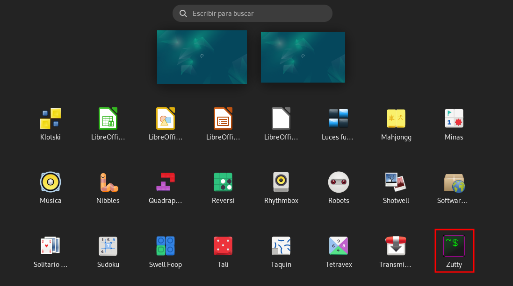
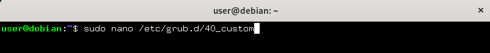
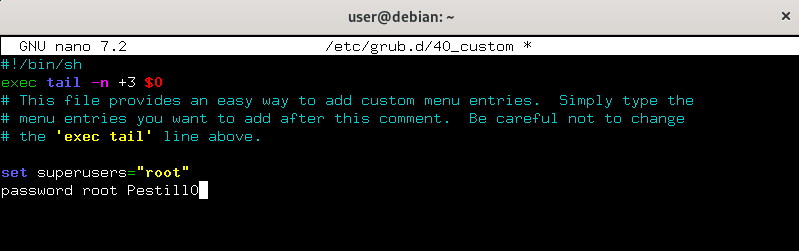
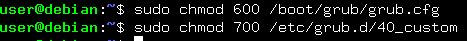
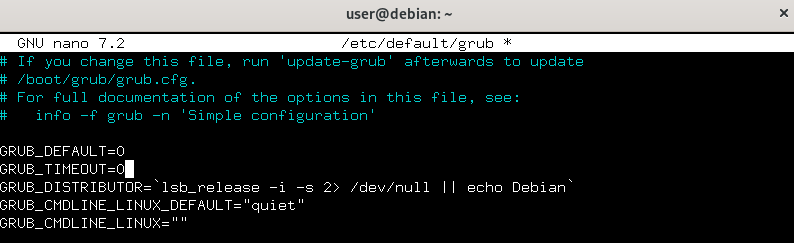
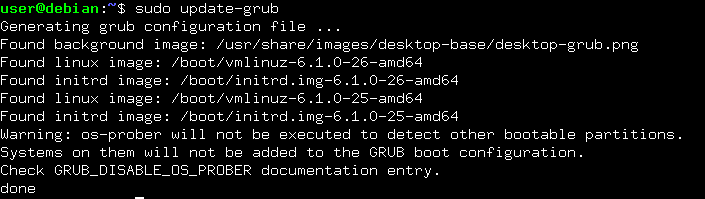

En este Colab profundizaremos sobre como bastionar el GRUB del sistema operativo que estamos utilizando. Para este bastionado usaremos un sistema Debian 12.
A continuación se encuentra un resumen de los puntos que veremos en este tutorial :
Para llevar a cabo las configuraciones se necesita acceder a la terminal del comandos del sistema
Para ello abrimos la pestaña de aplicaciones y ejecutamos la terminal de comandos (Zutty)

Para proteger el acceso al menú de GRUB, estableceremos una contraseña en el archivo de configuración 40_custom:
Edita el archivo 40_custom con permisos de administrador:
set superusers="root"
password root CONTRASEÑA

Añadimos las siguientes líneas al final del archivo para definir un usuario con permisos de superusuario en GRUB:

Guardamo y cerramos el archivo.
Para asegurarnos de que solo el usuario root pueda modificar el archivo de configuración de GRUB, ajusta los permisos:

Esto restringirá el acceso a estos archivos, permitiendo que solo el usuario root pueda leer y modificar los archivos críticos.
Para evitar que el menú de GRUB sea visible en el arranque, puedes configurar el tiempo de espera a 0 en el archivo grub:
Editamos el archivo grub en /etc/default/:
Cambiamos la línea de tiempo de espera:
GRUB_TIMEOUT=0

Guardamos y cierra el archivo.
Después de realizar cambios en los archivos de configuración, debemos regenerar el archivo principal grub.cfg:
sudo update-grub

Esto aplicará los cambios al archivo /boot/grub/grub.cfg.
Duration 0:02:00
Para crear una copia de seguridad de la configuración del GRUB seguiremos estos pasos:
Realizamos una copia de seguridad del archivo principal de configuración de GRUB usando el siguiente comando:
sudo cp /etc/default/grub /etc/default/grub.bak
Respaldamos los scripts de configuración adicionales copiándolos a un directorio de nuestra elección:
sudo cp -r /etc/grub.d/ /ruta/de/tu/respaldo/grub.d/
Copiamos el archivo final de configuración usando el siguiente comando:
sudo cp /boot/grub/grub.cfg /ruta/de/tu/respaldo/grub.cfg.bak